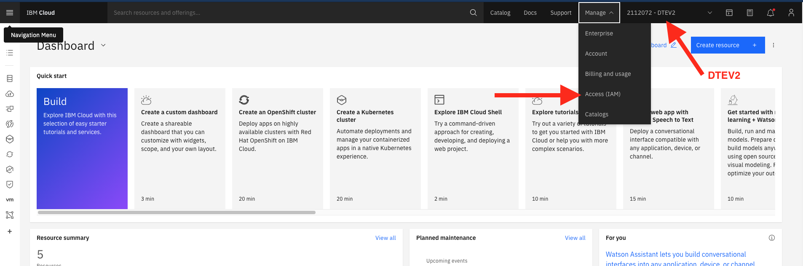
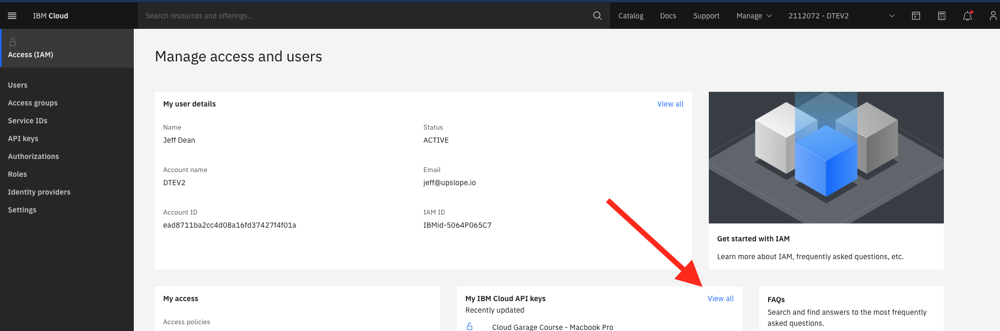
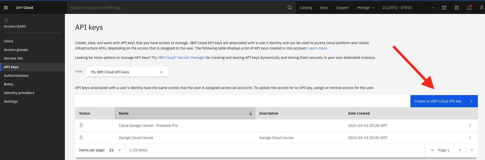
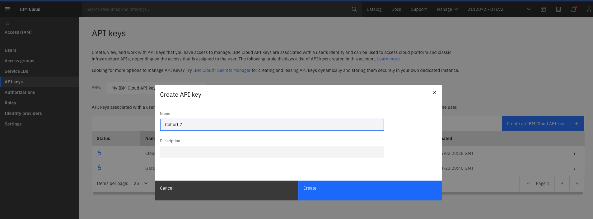
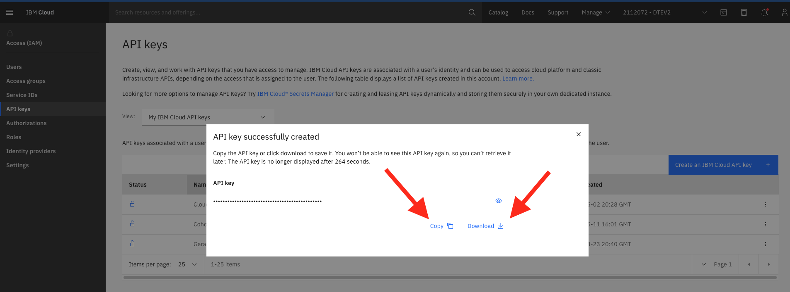
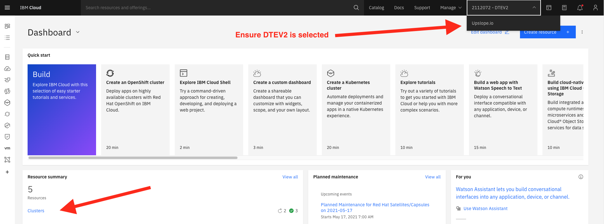
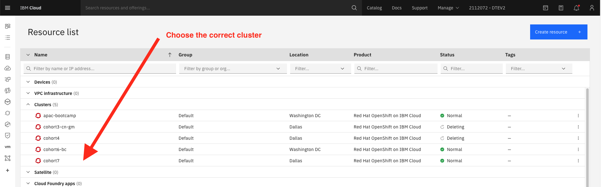
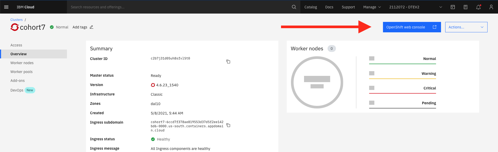
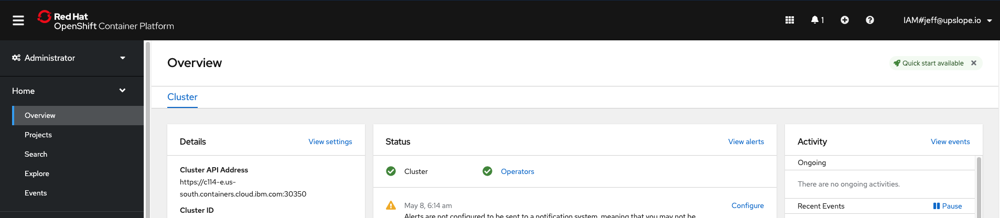

IBM Cloud Setup
PLEASE READ CAREFULLY!
Don't just copy/paste every command without reading
Note for Windows Users: You'll run all of these commands from Ubuntu (WSL)
Install the ibmcloud CLI
Do you already have ibmcloud installed?
which ibmcloud
If you see output like /usr/local/bin/ibmcloud then you have successfully installed it.
If you see output like not found then you need to install it:
- Visit https://cloud.ibm.com/docs/cli?topic=cli-install-ibmcloud-cli
- Follow the instructions for your operating system.
Tip: You can use the shell script in the second section instead of the installer option.
Install the ibmcloud container plugin
Do you have the container plugin?
ibmcloud plugin list
You should see container-service in the list of plugins.
If you do not see container-service then do the following:
- Visit https://cloud.ibm.com/docs/containers?topic=containers-cs_cli_install
- Follow the instructions
At the time of this writing it's
ibmcloud plugin install container-service
Install required dependencies
brew install yq@3
echo "export PATH=\"$(brew --prefix yq@3)/bin:\$PATH\"" >> ~/.zshrc
brew install jq
Install the toolkit developer tools
- Visit https://cloudnativetoolkit.dev/getting-started/dev-env-setup
- Follow instructions. At the time of this writing, the commands are:
curl -sL shell.cloudnativetoolkit.dev | bash -
source ~/.zshrc
After installing this, the following commands should all print a path:
which igc
which tkn
which oc
Verifying OC Plugins
When you run oc plugin list you should see several lines, including one with kubectl-pipeline.
If not, it's likely that your npm bin directory is not in your path.
If you installed Node via NVM, this might work:
nvm alias default node
If you installed Node with the installer, this might work:
echo "export PATH=\"\${HOME}/.npm/bin:\${PATH}\"" >> ~/.zshrc
source ~/.zshrc
Then run oc plugin list again.
Get an API Key
NOTE If you are installing tools before class starts, the cluster below might not be created yet, so skip these steps
- Log into https://cloud.ibm.com with your IBM email address
- ‼️ Make sure that "DTEV2" is selected from the account menu (see below)
- Click on Manage > Access (IAM)
- Under "My IBM Cloud API keys" click "View all"
- Click "Create an IBM Cloud API key"
- Enter a name and create the key
- Download the key to your computer (if you don't, you'll have to create another one)





Login to ibmcloud
In order to test that your account works, login using your API key.
Replace YOUR_API_KEY with your actual API key and then run this command:
ibmcloud login --apikey YOUR_API_KEY -r us-south
Run ibmcloud ks clusters to see the list of clusters you can access.
NOTE: if you are following these instructions before class starts, the cluster list might be empty, and that's OK.
You should see your cohort's cluster in the list.
If you don't, it could be because:
- It's before class started, and we haven't created it yet
- You created your API key in the wrong account (your personal account, as opposed to DTEV2)
- You have not been granted access to the cluster - contact your instructor
Access the OpenShift Cluster
In order to login to the cluster from the command line, you must first log in on the website.
- Log into https://cloud.ibm.com with your IBM email address
- Make sure that "DTEV2" is selected from the account menu
- Under "Resource Summary" click "Clusters"
- Click your cohort's cluster
- Click "OpenShift Web Console"
- You should see the OpenShift web console




(Optional) Configure ICC - fast cluster switcher
- Run
icc --add-account - name the account
garage - Paste in the API key you generated above
- Run
icc --generate
When you run icc you should see at least one cluster listed (the cluster for your cohort).
When you run icc <cluster name> you should not see an error message.